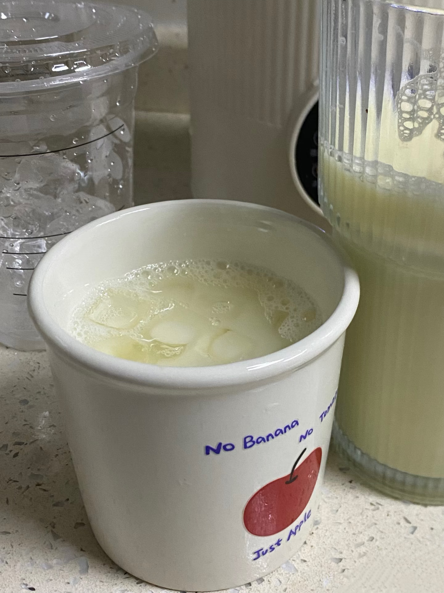
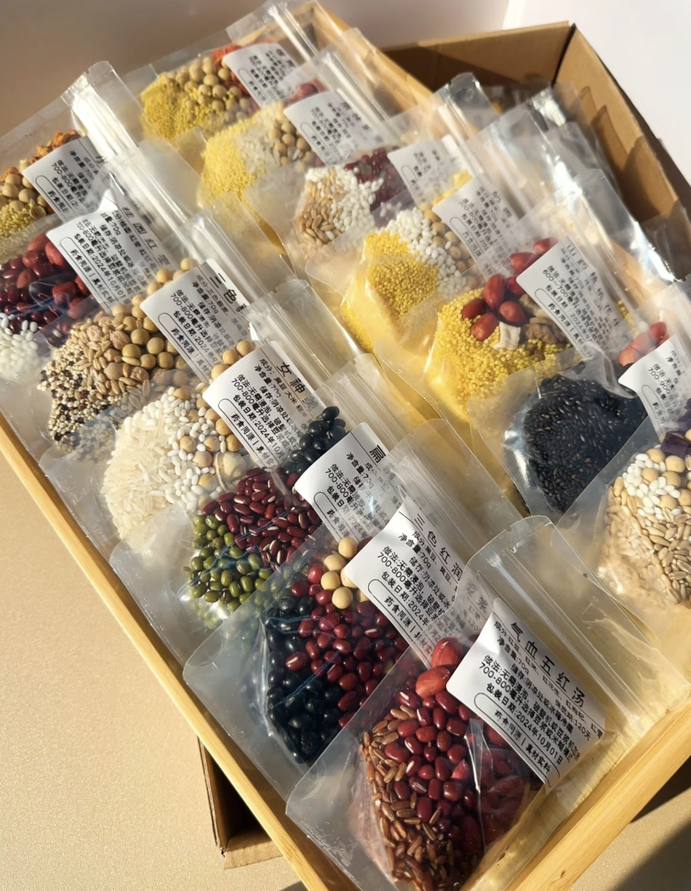

Fresh Soy Milk
现磨豆浆 — Traditional homemade soybean milk.
Ingredients
- 1 cup dried soybeans
- 6 cups water
- Sugar (optional)
Directions
- Soak soybeans in water overnight.
- Blend the soaked soybeans with fresh water until smooth.
- Strain the mixture through cheesecloth to remove solids.
- Bring the soy milk to a boil and cook for 10–15 minutes.
- Add sugar if desired and serve warm.